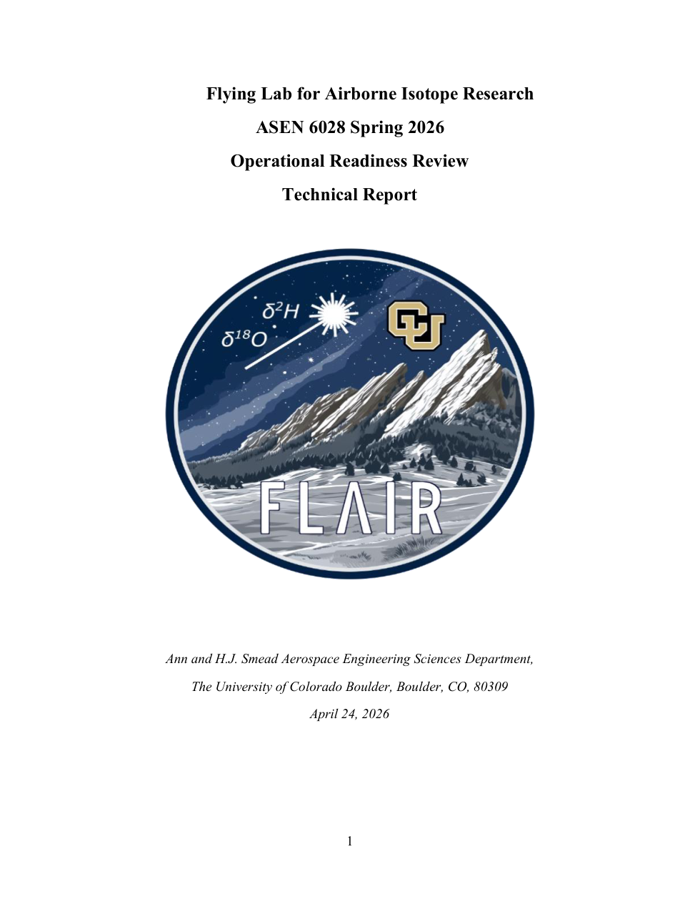
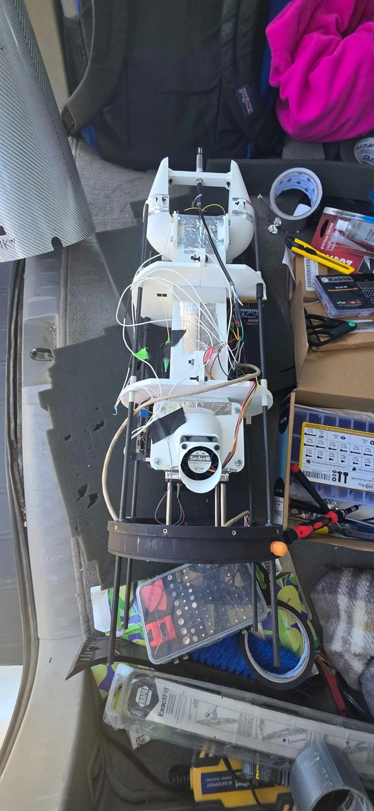
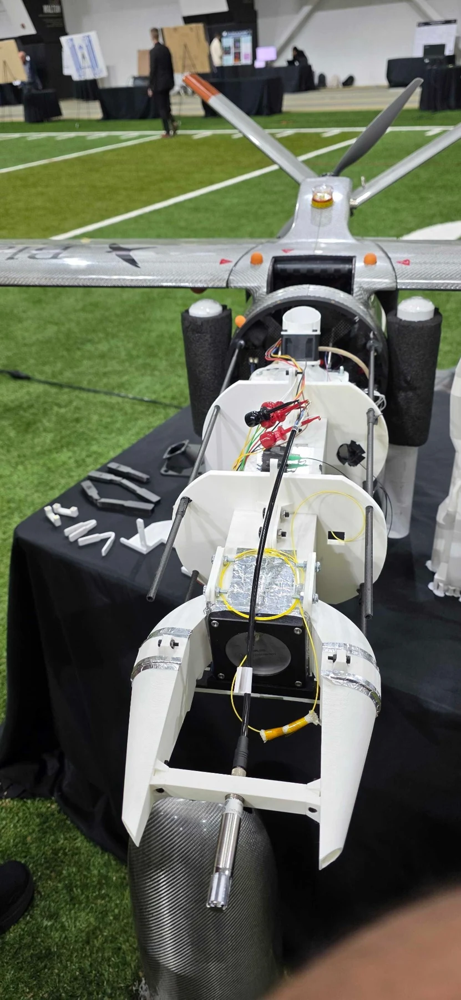
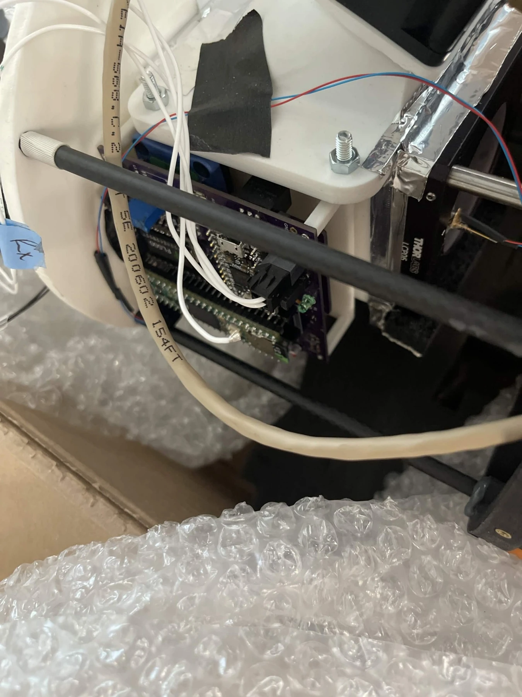
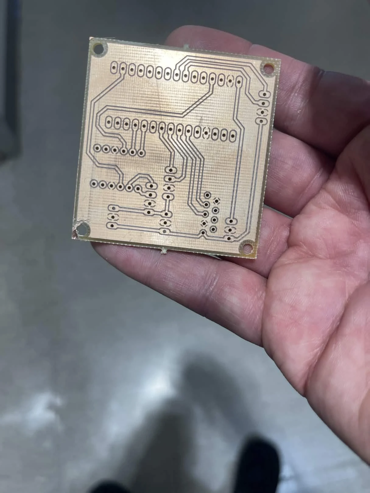
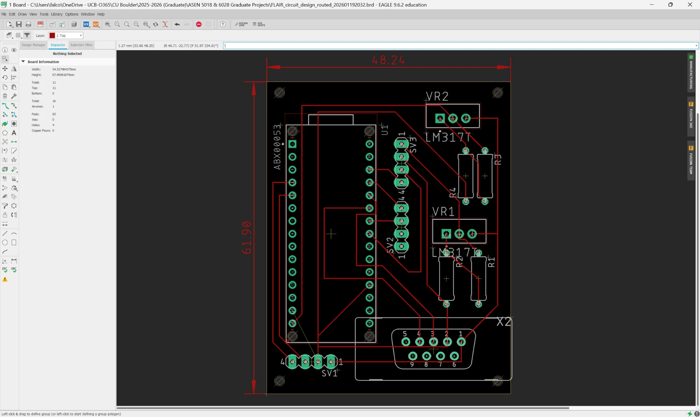
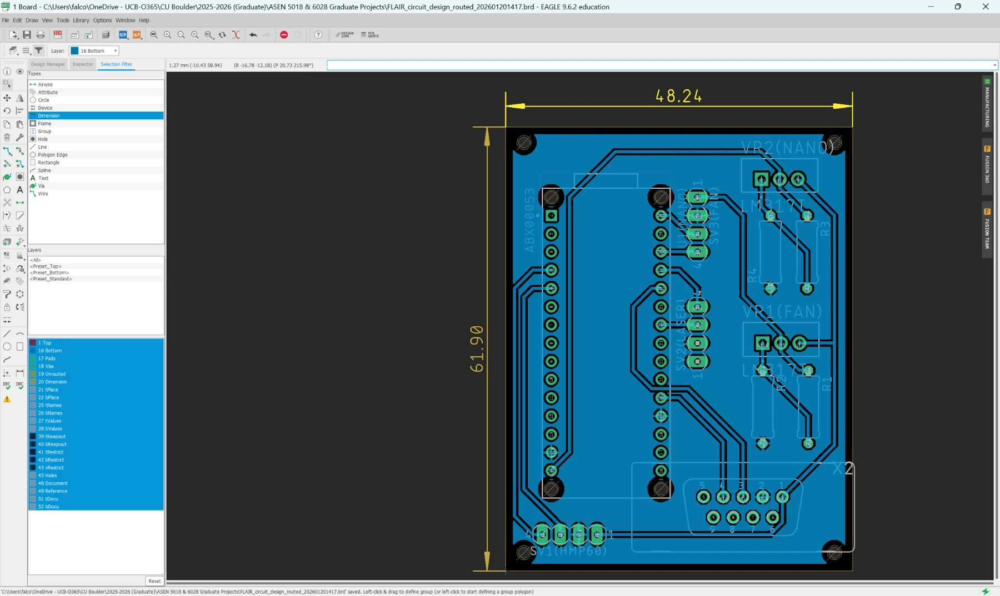
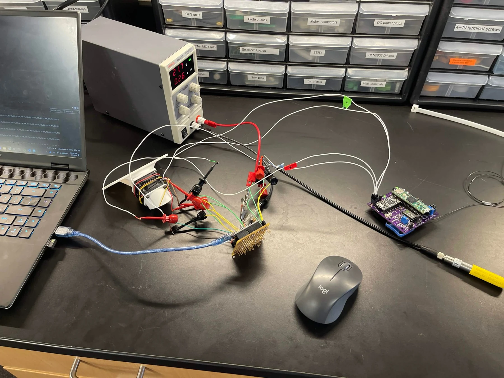
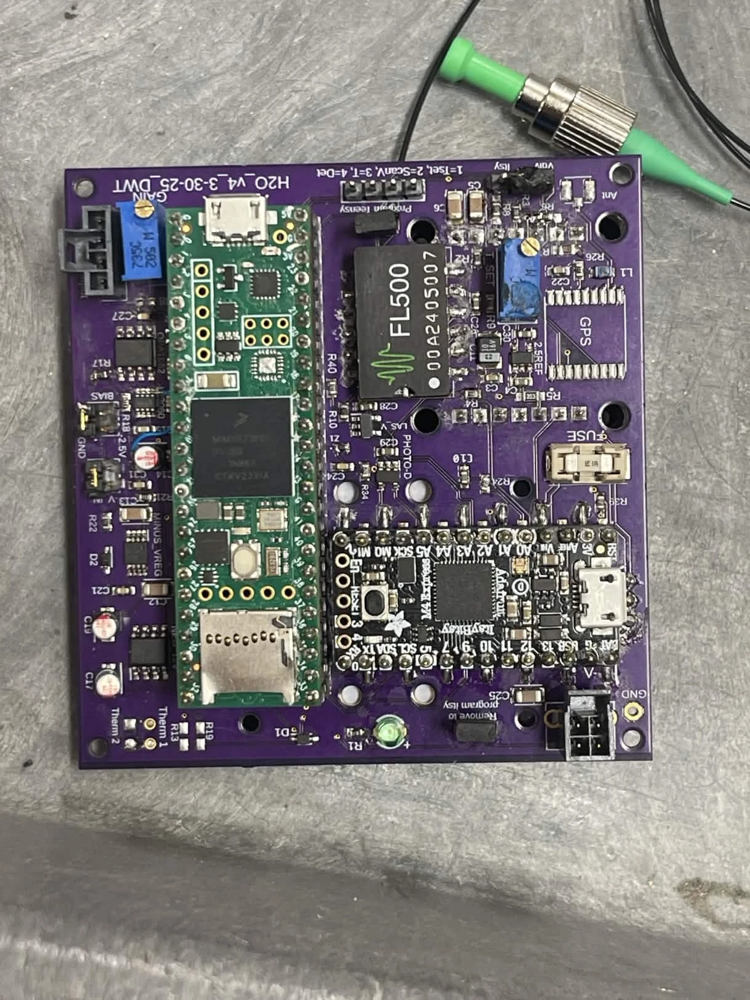
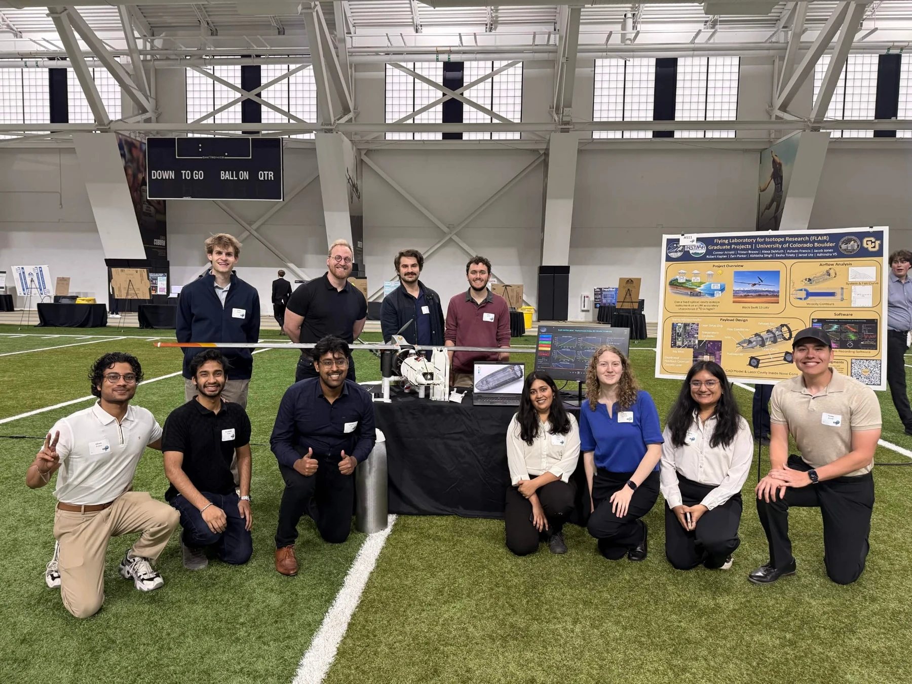

Flying Lab for Airborne Isotope Research (FLAIR)
INSTAAR · University of Colorado Boulder

Scientific background
FLAIR is a UAV-mounted laser-spectroscopy payload developed to measure oxygen-isotope ratios (δ¹⁸O) in atmospheric water vapor. Airborne measurements would help characterize variations in isotopic composition and support investigations of moisture transport and atmospheric water-cycle processes.
Technical contributions
Led electrical development within a 10-member team, designing three PCB revisions around Arduino Nano control, Vaisala HMP60 temperature/humidity sensing, fan and laser power, and DB9/UART interfaces. Replaced LM317-based regulation with an XL4015 buck converter and LM7810 regulator, and added bidirectional level shifting between the Teensy’s 3.3 V and Nano/laser 5 V interfaces. Supported fabrication, soldered all three revisions, and tested power stability, sensor acquisition and UAV interfaces.


Payload development & integration








FLAIR flight recording
FLAIR payload landing
Testing day footage of the UAV carrying the FLAIR payload during approach and landing.
Download recording ↓FLAIR flight test
Testing day recording of the FLAIR UAV in flight. Documents the aircraft used for airborne payload operations.
Download recording ↓CU Engineering Expo 2026
The FLAIR team presented the project at the University of Colorado Boulder’s Engineering Expo 2026.
